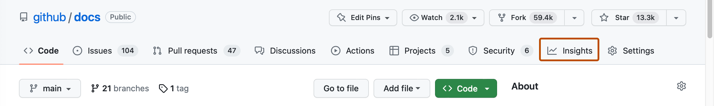
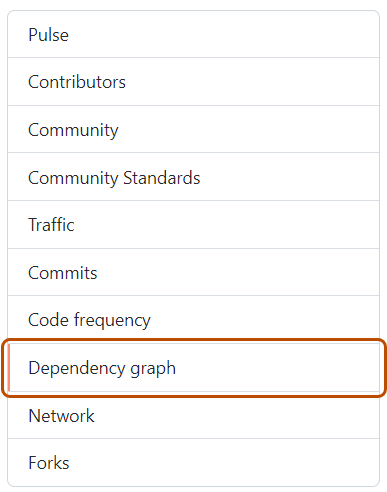

Resolve run failures and manually update your dependencies by re-running Dependabot jobs.
Re-running a Dependabot version updates job
On GitHub, navigate to the main page of the repository.
Under your repository name, click Insights.

In the left sidebar, click Dependency graph.

Under "Dependency graph", click Dependabot.
To the right of the name of manifest file that you're interested in, click Recent update jobs.
To the right of the affected manifest file, click Check for updates to re-run a Dependabot version updates job and check for new updates to dependencies for that ecosystem.
Re-running a Dependabot security updates job
On GitHub, navigate to the main page of the repository.
Under your repository name, click Security and quality.
In the left sidebar, under "Vulnerability alerts", click Dependabot.
Under "Dependabot", click the alert you want to view.
In the section displaying the error details for the alert, click Try again to re-run the Dependabot security updates job.